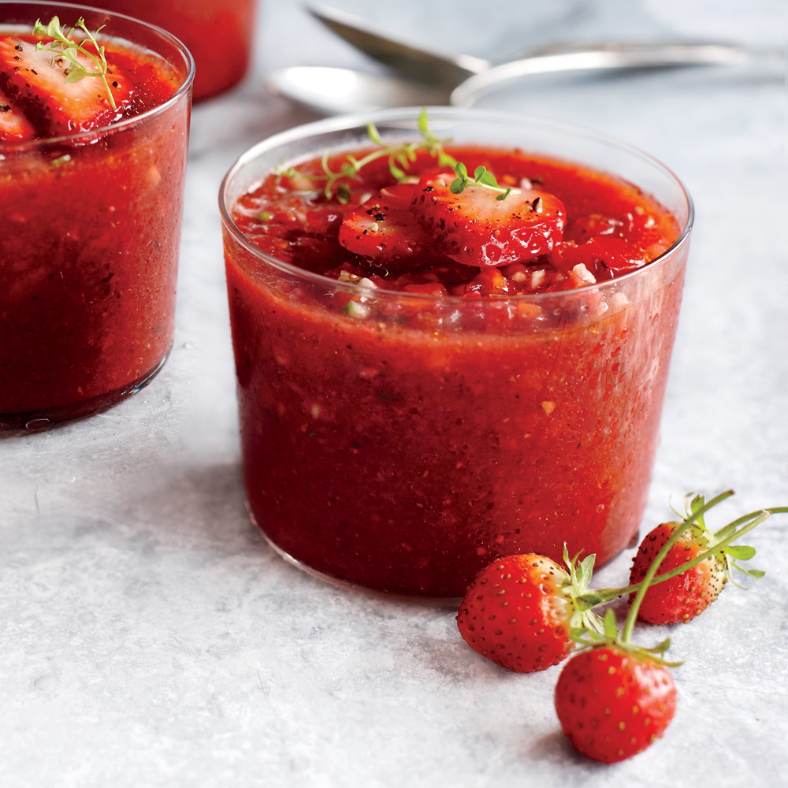

Strawberry Gazpacho

The strawberry and tomato gazpacho, also known as the strawberries cold soup is an easy and very appetizing recipe to refresh and nourish on hot days. Strawberries bring a fruity flavor to the traditional gazpacho, ideal to delight any palate, even children’s one.
There are several versions of this recipe. We have tried some of them and we have created our own version. Surely once you understand the process, you will do the same, adapting the amount of ingredients to your personal tastes.
Ingredients
- 1 medium tomato, coarsely chopped (about 1 1/3 cups)
- 1/2 English cucumber, peeled and coarsely chopped (about 1 cup)
- 1/2 medium red bell pepper, seeded and coarsely chopped (about 1/2 cup)
- 1 pound ripe strawberries, hulled and halved
- 1/2 teaspoon minced garlic
- 1/2 teaspoon chopped thyme
- 3 tablespoons extra-virgin olive oil
- 1 tablespoon balsamic vinegar
- 1/4 teaspoon kosher salt
- 1/4 teaspoon freshly ground black pepper
- 1/2 cup organic vegetable broth
- 6 strawberries, sliced
Steps
- Place tomato, cucumber, and bell pepper in a food processor; pulse until finely chopped. Transfer to a bowl.
- Add halved strawberries to processor; pulse until finely chopped. Add chopped strawberries to cucumber mixture, stirring to combine. Reserve 1 cup strawberry mixture; return remaining strawberry mixture, garlic, and thyme to processor; process until pureed. Return mixture to bowl; stir in olive oil, vinegar, salt, black pepper, and reserved 1 cup strawberry mixture.
- Cover and chill 4 to 8 hours. Stir in broth. Garnish with sliced strawberries.